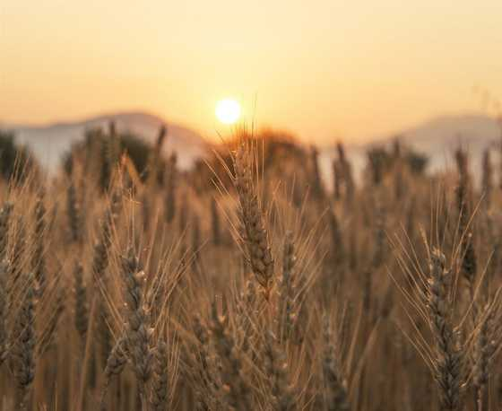
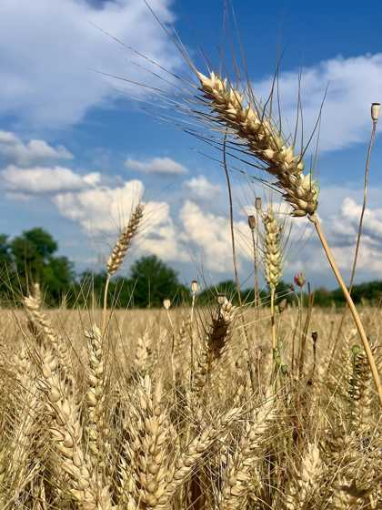

糀と花のお菓子と暮らしの雑貨|秋田県大仙市
やをら
ゆっくり静かに、糀が甘みをひらくのを待つ。

お店の由来と想い
「やをら」は、「ゆっくり静かに」という意味の古い言葉だそうです。お店では、この言葉を糀の発酵になぞらえて紹介しています。
お店があるのは、奥羽山脈のふもとの大仙市太田地域。まわりを田んぼに囲まれた土地の井戸水と、秋田県オリジナルブランドの糀「あめこうじ」で、時間をかけて静かに発酵させたお菓子づくりをされています。
砂糖や保存料に頼らず、素材そのものの甘みを生かすことを大切にしている、と紹介されています。
以上は、ふるさと納税サイト(ふるさとチョイス)の事業者紹介と、Instagramプロフィールの記載をもとにしています。ここから先の文章の雰囲気やデザインは、制作側のイメージです。



口コミ(イメージ例)
以下は制作側が作ったイメージ例で、実在のお客様の声ではありません。
イメージ例甘さがやさしくて、食べたあとも体が軽い感じがしました。ゆっくり味わいたくなるお菓子です。
イメージ例田んぼの広がる道を通って行く時間も含めて、ちょっとした休日になりました。
イメージ例お店の名前のとおり、せかされない空気がありました。贈り物にもしたいです。
アクセス
〒019-1613 秋田県大仙市太田町太田新田街道上56-6
電話:準備中